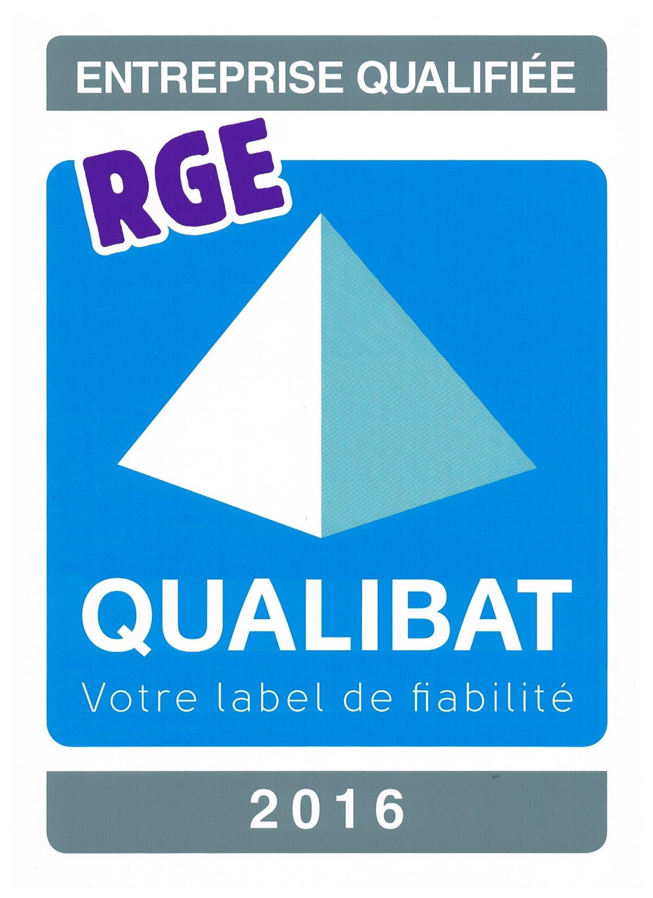
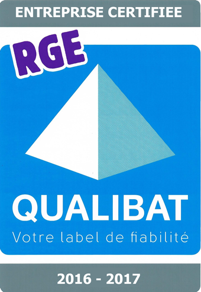

Couverture
Toiture neuve et réfection
Tuiles, tuiles écailles, bac acier, ardoise ou joints debout. Habillage de lucarnes, charpente associée.

Schubert Couverture Zinguerie Isolation
Qualibat RGE depuis 2016 Entreprise 100 % RGE
Notre entreprise spécialisée dans la réfection de toiture, l’isolation de toiture et de comble non aménageable est implantée à Brié-et-Angonnes, dans l’Isère.
Métiers
Couverture, isolation par l’extérieur, combles perdus, Velux et zinguerie : un seul interlocuteur pour le toit.
Tuiles, tuiles écailles, bac acier, ardoise ou joints debout. Habillage de lucarnes, charpente associée.

Isoler lors d’une réfection sans démonter les plafonds en rampant, ni perdre de hauteur sous toiture.

Isolation par projection de laine de roche, pour les volumes trop bas pour être aménagés.

Du simple remplacement au jumelage, jusqu’à la transformation d’un débarras en chambre.
Pourquoi SCZI
Que votre toiture soit en tuiles, en tuiles écailles, en bac acier, en ardoise ou en joints debout, nous vous répondons de manière adaptée et personnalisée, en respectant les normes DTU et CSTB.
Nous effectuons des habillages et abergements de cheminée, la pose de chéneaux, des habillages de planches de rive et de bandeaux. Nous assurons également la pose et le remplacement de vos fenêtres de toit Velux.
Faites des économies de chauffage en pensant à l’isolation des combles non aménageables par laine de roche soufflée, ou à l’isolation des combles aménagés par l’extérieur.
SCHUBERT Eric, gérant. Le visage du chantier, pas un standard anonyme.
Lucarnes, sarking, Velux : des chantiers à Eybens, Saint-Nazaire et dans l’agglomération grenobloise.
Qualibat · RGE
SCZI est certifiée Qualibat depuis 2016, renouvelée jusqu’en 2026 : 10 ans de performance et de qualité sur les chantiers. L’entreprise est 100 % RGE (Reconnu Garant de l’Environnement).
2016 – 2026Dix ans de certification Qualibat
100 % RGEToute l’activité est reconnue RGE
ContrôleQualification suivie, travaux dans les règles de l’art


Un artisan RGE, c’est la condition pour demander les aides publiques à la rénovation énergétique. Les montants, plafonds et pièces à fournir dépendent du foyer et des règles en vigueur au moment du chantier : nous n’affichons pas de chiffres qui pourraient dater.
Aide de l’État pour des travaux d’amélioration énergétique, sous conditions de ressources et de projet.
Certificats d’économies d’énergie : une prime versée par les fournisseurs d’énergie, selon les gestes réalisés.
Emprunt sans intérêts pour financer des travaux de rénovation énergétique éligibles.
Taux réduit sur les travaux de rénovation énergétique, lorsque les conditions fiscales sont réunies.
Le signe RGE atteste d’une entreprise formée, suivie, et d’un chantier déclaré selon le référentiel.
Les ouvrages restent réalisés dans le respect des DTU et des avis CSTB applicables au support.
Devis
Décrivez le bâtiment, le lieu des travaux et vos besoins : nous revenons vers vous.
Ouvrir le formulaire4290 route Napoléon, 38320 Brié-et-Angonnes